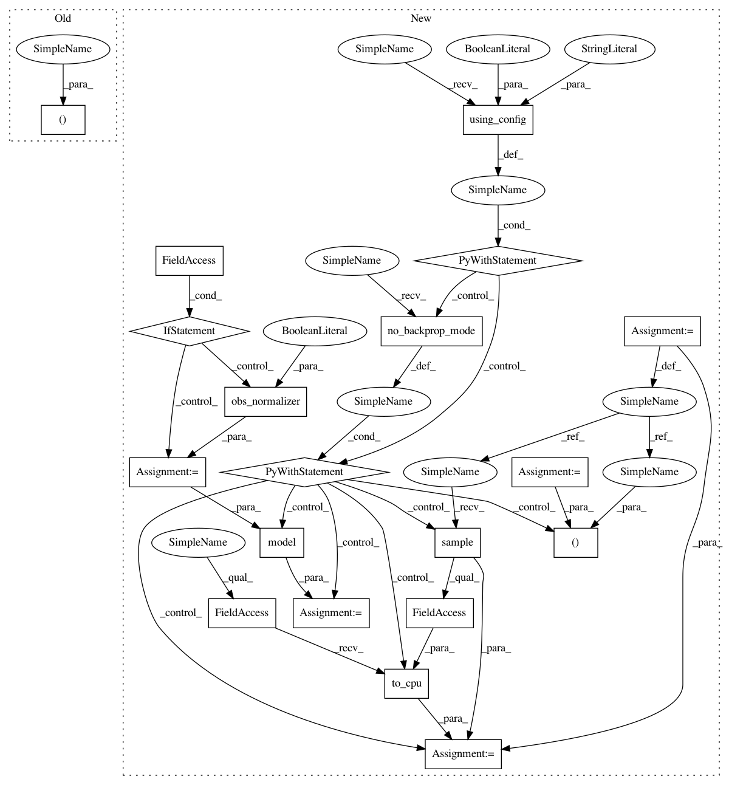

67d13b4ba91b23ad29f660aae68a01ddbd809530,chainerrl/agents/ppo.py,PPO,batch_act,#PPO#Any#,446
Before Change
Returns:
batch_action (ndarray): set of actions for each environment
batch_action, batch_v = self._batch_act(batch_obs)
return batch_action
After Change
xp = self.xp
b_state = self.batch_states(batch_obs, xp, self.phi)
if self.obs_normalizer:
b_state = self.obs_normalizer(b_state, update=False)
with chainer.using_config("train", False), chainer.no_backprop_mode():
action_distrib, _ = self.model(b_state)
action = chainer.cuda.to_cpu(action_distrib.sample().data)
return action
def batch_act_and_train(self, batch_obs):
xp = self.xp
In pattern: SUPERPATTERN
Frequency: 3
Non-data size: 19
Instances
Project Name: chainer/chainerrl
Commit Name: 67d13b4ba91b23ad29f660aae68a01ddbd809530
Time: 2018-10-16
Author: muupan@gmail.com
File Name: chainerrl/agents/ppo.py
Class Name: PPO
Method Name: batch_act
Project Name: chainer/chainerrl
Commit Name: 67d13b4ba91b23ad29f660aae68a01ddbd809530
Time: 2018-10-16
Author: muupan@gmail.com
File Name: chainerrl/agents/ppo.py
Class Name: PPO
Method Name: act_and_train
Project Name: chainer/chainerrl
Commit Name: 67d13b4ba91b23ad29f660aae68a01ddbd809530
Time: 2018-10-16
Author: muupan@gmail.com
File Name: chainerrl/agents/ppo.py
Class Name: PPO
Method Name: act